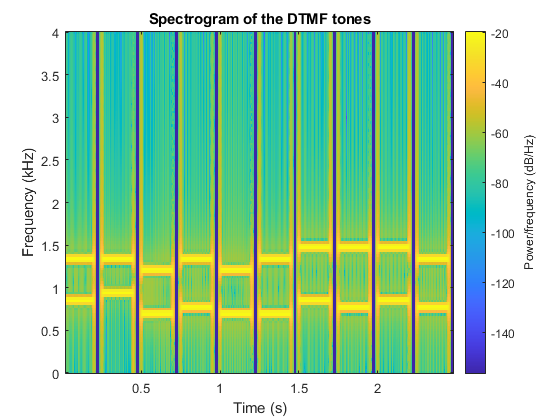

4 Lab Exercises: DTMF Decoding
Contents
A DTMF decoding system consists of bandpass filters and a scoring mechanism. This script demonstrates the implementation of the DTMF decoding system.
fs = 8000; L = 80; % Choose an appropriate value based on your filter design phone_number = '8015129695'; xx = dtmfdial(phone_number, fs); soundsc(xx, fs); % Play the sound decoded_keys = dtmfrun(xx, L, fs); disp(['Decoded keys: ',phone_number ]); % Create a spectrogram spectrogram(xx, 256, 250, 256, fs, 'yaxis'); title('Spectrogram of the DTMF tones');
Section 4.1: Simple Bandpass Filter Design (dtmfdesign.m)
FIR filters are designed with sinusoidal impulse responses. This section defines the dtmfdesign function. 4.1a) For this one, we decided to use the mathematical description to calculate beta and then multiplied it accross to get the value of the hh column vector. 4.1b)
function hh = dtmfdesign(fb, L, fs) % DTMFDESIGN % hh = dtmfdesign(fb, L, fs) % returns a matrix (L by length(fb)) where each column contains % the impulse response of a BPF, one for each frequency in fb % fb = vector of center frequencies % L = length of FIR bandpass filters % fs = sampling freq % Initialize the matrix to store the filters hh = zeros(L, length(fb)); % Loop over each center frequency in fb for i = 1:length(fb) % Generate the impulse response for the bandpass filter n = 0:L-1; h = cos(2 * pi * fb(i) * n / fs); % Measure the peak value of the unscaled frequency response peak_value = max(abs(fft(h))); % Scale the filter to have a maximum magnitude of one B = 1 / peak_value; % Apply the scaling to the filter hh(:, i) = B * h; end end
4.1c) DONE - ADDITIONAL INFO FOR PART D) F) We justify the legth of the filters based on the width of the passband we want to pass in relation to the width and amplitude of the side lobes. As the length of the filter increases, the width of the passband decreases and we want to strike a balance between having efficient code and passing appropariate frequencies without skipping parts of an individual frequency.
Section 4.2: Scoring Function (dtmfscore.m)
The dtmfscore function scores the output of a bandpass filter based on the maximum amplitude.
function sc = dtmfscore(xx, hh) %DTMFSCORE % usage: sc = dtmfscore(xx, hh) % returns a score based on the max amplitude of the filtered output % xx = input DTMF tone % hh = impulse response of ONE bandpass filter % The signal detection is done by filtering xx with a length-L % BPF, hh, and then finding the maximum amplitude of the output. % The score is either 1 or 0. % sc = 1 if max(|y[n]|) is greater than, or equal to, 0.59 % sc = 0 if max(|y[n]|) is less than 0.59 xx = xx*(2/max(abs(xx))); %--Scale the input x[n] to the range [-2,+2] % Filtering the input signal yy = conv(xx, hh); % Finding the maximum amplitude of the filtered output max_amplitude = max(abs(yy)); % Scoring based on the max amplitude if max_amplitude >= 0.59 sc = 1; else sc = 0; end end
Decoded keys: 8015129695
Section 4.3: DTMF Decode Function (dtmfrun.m)
The dtmfrun function uses dtmfscore to determine which key was pressed based on an input DTMF tone.
function keys = dtmfrun(xx, L, fs) %DTMFRUN keys = dtmfrun(xx, L, fs) % returns the list of key names found in xx. % keys = array of characters, i.e., the decoded key names % xx = DTMF waveform % L = filter length % fs = sampling freq % Define center frequencies for DTMF tones center_freqs = [697, 770, 852, 941, 1209, 1336, 1477, 1633]; % Design the bandpass filters hh = dtmfdesign(center_freqs, L, fs); % Find the beginning and end of tone bursts [nstart, nstop] = dtmfcut(xx, fs); keys = []; for kk = 1:length(nstart) % Extract one DTMF tone segment x_seg = xx(nstart(kk):nstop(kk)); % Initialize variables to store scores for row and column frequencies row_scores = zeros(1, 4); col_scores = zeros(1, 4); % Loop through row frequencies for row = 1:4 % Score the row frequency using dtmfscore row_scores(row) = dtmfscore(x_seg, hh(:, row)); end % Loop through column frequencies for col = 1:4 % Score the column frequency using dtmfscore col_scores(col) = dtmfscore(x_seg, hh(:, col + 4)); end % Find the indices of scored frequencies row_index = find(row_scores == 1); col_index = find(col_scores == 1); % Check if one row frequency and one column frequency are scored if length(row_index) == 1 && length(col_index) == 1 % Determine the key based on the row and column index key = ['1', '2', '3', 'A'; '4', '5', '6', 'B'; '7', '8', '9', 'C'; '*', '0', '#', 'D']; decoded_key = key(row_index, col_index); % Append the decoded key to the result keys = [keys, decoded_key]; else % Error indicator if too many or too few frequencies are scored keys = [keys, 'Error']; end end end
Section 4.4: Telephone Numbers (dtmfdial.m)
The dtmfdial function generates a signal vector of DTMF tones for dialing a telephone number.
function xx = dtmfdial(keyNames, fs) % DTMFDIAL Create a signal vector of tones to dial a DTMF telephone system. % % usage: xx = dtmfdial(keyNames, fs) % keyNames = vector of characters containing valid key names % fs = sampling frequency % xx = signal vector that is the concatenation of DTMF tones. % Define DTMF frequency information dtmf.keys = ['1', '2', '3', 'A'; '4', '5', '6', 'B'; '7', '8', '9', 'C'; '*', '0', '#', 'D']; dtmf.colTones = ones(4, 1) * [1209, 1336, 1477, 1633]; dtmf.rowTones = [697; 770; 852; 941] * ones(1, 4); % Define tone and silence durations tone_duration = 0.20; % seconds silence_duration = 0.05; % seconds % Initialize output signal vector xx = []; for k = 1:length(keyNames) % Find row and column indices for the current key [row, col] = find(keyNames(k) == dtmf.keys); % Check for illegitimate key name if isempty(row) || isempty(col) error(['Invalid key name: ', keyNames(k)]); end % Generate DTMF tone pair t = 0:1/fs:tone_duration; % time vector for the tone pair % tone = sin(2 * pi * dtmf.rowTones(row, col) * t) + sin(2 * pi * dtmf.colTones(row, col) * t); tone = cos(2*pi*dtmf.rowTones(row,col)*t) + cos(2*pi*dtmf.colTones(row,col)*t); % Concatenate tone pair to the output signal xx = [xx, tone]; % Add silence between tone pairs silence = zeros(1, round(fs * silence_duration)); xx = [xx, silence]; end end function key = dtmfchar(row, col) % DTMFCHAR key = dtmfchar(row, col) % maps row and column indices to DTMF key character row_chars = '123A'; col_chars = '456B'; key = [row_chars(row), col_chars(col)]; end